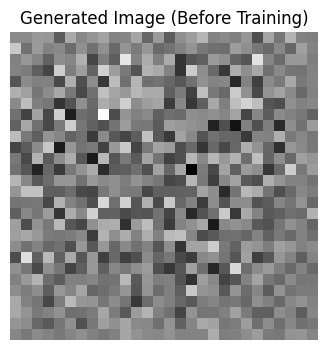
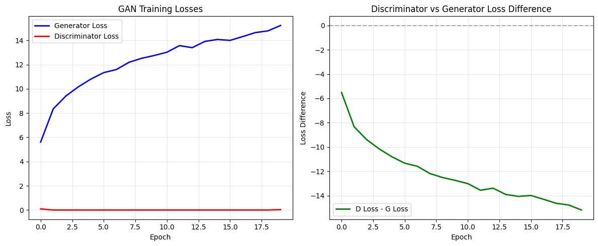
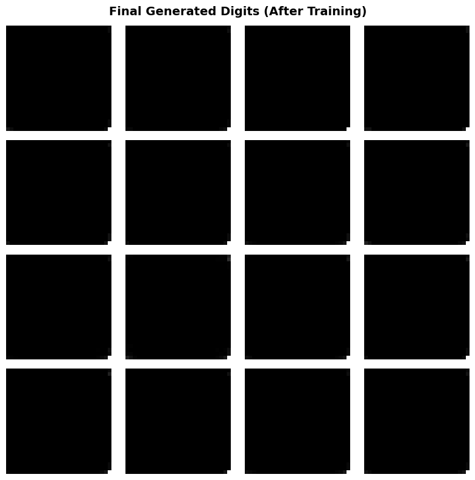

Aim: Generative Adversarial Networks (GAN) using PyTorch Pratham Goyal A2345924079 4CSE-2eve
This notebook demonstrates the implementation of a Deep Convolutional GAN (DCGAN) using PyTorch. A GAN consists of two networks:
We'll train these networks on the MNIST dataset and visualize the generated digits.
Import required packages for data handling, neural networks, visualization, and utilities.
# ============================================================================
# IMPORTS - Core Libraries
# ============================================================================
import torch
import torch.nn as nn
import torch.optim as optim
from torch.utils.data import DataLoader, TensorDataset
import torchvision
import torchvision.transforms as transforms
from torchsummary import summary
import matplotlib.pyplot as plt
import numpy as np
import os
import time
from IPython import display
import imageio
import glob
# Device configuration - use GPU if available, otherwise CPU
DEVICE = torch.device('cuda' if torch.cuda.is_available() else 'cpu')
print(f"Using device: {DEVICE}")Using device: cpu
Load and preprocess MNIST dataset for GAN training.
# ============================================================================
# DATA PREPARATION
# ============================================================================
print("Loading MNIST dataset...")
# Load MNIST dataset - we only need images, not labels
(train_images) = torch.utils.data.random_split(
torchvision.datasets.MNIST(root='./data', train=True, download=True,
transform=transforms.ToTensor()),
[60000]
)[0]
# Normalize images to [-1, 1] range (better for GAN training with tanh activation)
train_images_tensor = []
for img, _ in train_images:
# Convert from [0, 1] to [-1, 1]
normalized = img * 2.0 - 1.0
train_images_tensor.append(normalized)
train_images_tensor = torch.stack(train_images_tensor)
# Create data loader
BUFFER_SIZE = 60000
BATCH_SIZE = 256
# Create dataset and dataloader
train_dataset = TensorDataset(train_images_tensor)
train_loader = DataLoader(train_dataset, batch_size=BATCH_SIZE, shuffle=True)
print(f"Dataset loaded successfully!")
print(f"Total samples: {len(train_images_tensor)}")
print(f"Batch size: {BATCH_SIZE}")
print(f"Image shape: {train_images_tensor[0].shape}")Loading MNIST dataset...
100%|██████████| 9.91M/9.91M [00:00<00:00, 12.5MB/s]
100%|██████████| 28.9k/28.9k [00:00<00:00, 344kB/s]
100%|██████████| 1.65M/1.65M [00:00<00:00, 3.19MB/s]
100%|██████████| 4.54k/4.54k [00:00<00:00, 4.64MB/s]
Dataset loaded successfully!
Total samples: 60000
Batch size: 256
Image shape: torch.Size([1, 28, 28])
Define noise dimension and other hyperparameters.
# ============================================================================
# MODEL CONFIGURATION
# ============================================================================
# Dimension of the random noise vector fed to the generator
Z_DIM = 100
print(f"Noise dimension (z_dim): {Z_DIM}")Noise dimension (z_dim): 100
Define the generator network that creates fake images from random noise.
# ============================================================================
# GENERATOR NETWORK
# ============================================================================
class Generator(nn.Module):
"""
Generator Network for DCGAN
Architecture:
- Fully connected layer that reshapes to (256, 7, 7)
- Series of transposed convolutions to upsample to (1, 28, 28)
- Batch normalization and LeakyReLU activations
- Final tanh activation to output images in [-1, 1] range
"""
def __init__(self, z_dim=100):
super(Generator, self).__init__()
# Initial dense layer: z_dim -> 256*7*7
self.fc = nn.Linear(z_dim, 256 * 7 * 7, bias=False)
self.bn1 = nn.BatchNorm1d(256 * 7 * 7)
# Reshape will be done in forward method
# Layer 1: (256, 7, 7) -> (128, 7, 7)
self.conv1 = nn.ConvTranspose2d(256, 128, kernel_size=5, stride=1,
padding=2, bias=False)
self.bn2 = nn.BatchNorm2d(128)
# Layer 2: (128, 7, 7) -> (64, 14, 14)
self.conv2 = nn.ConvTranspose2d(128, 64, kernel_size=5, stride=2,
padding=2, output_padding=1, bias=False)
self.bn3 = nn.BatchNorm2d(64)
# Layer 3: (64, 14, 14) -> (1, 28, 28)
self.conv3 = nn.ConvTranspose2d(64, 1, kernel_size=5, stride=2,
padding=2, output_padding=1, bias=False)
self.leaky_relu = nn.LeakyReLU(0.2)
self.tanh = nn.Tanh()
def forward(self, z):
"""
Forward pass of generator
Args:
z: Random noise tensor of shape (batch_size, z_dim)
Returns:
Generated images of shape (batch_size, 1, 28, 28) in [-1, 1] range
"""
# Dense layer
x = self.fc(z)
x = self.bn1(x)
x = self.leaky_relu(x)
# Reshape to (batch_size, 256, 7, 7)
x = x.view(-1, 256, 7, 7)
# Convolutional layers with upsampling
x = self.conv1(x)
x = self.bn2(x)
x = self.leaky_relu(x)
x = self.conv2(x)
x = self.bn3(x)
x = self.leaky_relu(x)
# Final layer with tanh activation
x = self.conv3(x)
x = self.tanh(x)
return x
# Initialize generator
generator = Generator(z_dim=Z_DIM).to(DEVICE)
print("\n" + "="*70)
print("GENERATOR ARCHITECTURE")
print("="*70)
try:
summary(generator, input_size=(Z_DIM,), device=DEVICE.type)
except:
print("Note: torchsummary may have display issues. Generator created successfully.")
print(f"Generator parameters: {sum(p.numel() for p in generator.parameters()):,}")
======================================================================
GENERATOR ARCHITECTURE
======================================================================
----------------------------------------------------------------
Layer (type) Output Shape Param #
================================================================
Linear-1 [-1, 12544] 1,254,400
BatchNorm1d-2 [-1, 12544] 25,088
LeakyReLU-3 [-1, 12544] 0
ConvTranspose2d-4 [-1, 128, 7, 7] 819,200
BatchNorm2d-5 [-1, 128, 7, 7] 256
LeakyReLU-6 [-1, 128, 7, 7] 0
ConvTranspose2d-7 [-1, 64, 14, 14] 204,800
BatchNorm2d-8 [-1, 64, 14, 14] 128
LeakyReLU-9 [-1, 64, 14, 14] 0
ConvTranspose2d-10 [-1, 1, 28, 28] 1,600
Tanh-11 [-1, 1, 28, 28] 0
================================================================
Total params: 2,305,472
Trainable params: 2,305,472
Non-trainable params: 0
----------------------------------------------------------------
Input size (MB): 0.00
Forward/backward pass size (MB): 0.73
Params size (MB): 8.79
Estimated Total Size (MB): 9.52
----------------------------------------------------------------
Test the generator with random noise to see initial output quality.
# ============================================================================
# GENERATE SAMPLE IMAGE (BEFORE TRAINING)
# ============================================================================
# Generate a random noise vector
'''noise = torch.randn(1, Z_DIM).to(DEVICE)
# Generate a sample image
with torch.no_grad():
generated_image = generator(noise)
# Visualize the generated sample
plt.figure(figsize=(4, 4))
plt.imshow(generated_image[0, 0, :, :].cpu().detach().numpy(), cmap='gray')
plt.title('Generated Image (Before Training)')
plt.axis('off')
plt.tight_layout()
plt.show()
print("Sample image generated successfully!")'''
# Set generator to evaluation mode
generator.eval()
# Generate random noise
noise = torch.randn(1, Z_DIM).to(DEVICE)
# Generate a sample image
with torch.no_grad():
generated_image = generator(noise)
# Visualize the generated image
plt.figure(figsize=(4,4))
plt.imshow(generated_image[0,0,:,:].cpu().numpy(), cmap='gray')
plt.title("Generated Image (Before Training)")
plt.axis('off')
plt.show()
print("Sample image generated successfully!")
Sample image generated successfully!
Define the discriminator network that classifies images as real or fake.
# ============================================================================
# DISCRIMINATOR NETWORK
# ============================================================================
class Discriminator(nn.Module):
"""
Discriminator Network for DCGAN
Architecture:
- Series of convolutional layers with stride 2 for downsampling
- LeakyReLU activations and dropout for regularization
- Flattening and final dense layer with sigmoid output
- Outputs probability that input is real (1) or fake (0)
"""
def __init__(self):
super(Discriminator, self).__init__()
# Layer 1: (1, 28, 28) -> (64, 14, 14)
self.conv1 = nn.Conv2d(1, 64, kernel_size=5, stride=2, padding=2)
self.dropout1 = nn.Dropout2d(0.3)
# Layer 2: (64, 14, 14) -> (128, 7, 7)
self.conv2 = nn.Conv2d(64, 128, kernel_size=5, stride=2, padding=2)
self.dropout2 = nn.Dropout2d(0.3)
# Flatten and classification layer
self.fc = nn.Linear(128 * 7 * 7, 1)
self.leaky_relu = nn.LeakyReLU(0.2)
self.sigmoid = nn.Sigmoid()
def forward(self, x):
"""
Forward pass of discriminator
Args:
x: Input images of shape (batch_size, 1, 28, 28)
Returns:
Classification logits (not probabilities for training stability)
"""
# Convolutional layers
x = self.conv1(x)
x = self.leaky_relu(x)
x = self.dropout1(x)
x = self.conv2(x)
x = self.leaky_relu(x)
x = self.dropout2(x)
# Flatten
x = x.view(x.size(0), -1)
# Classification (return logits, not probabilities)
x = self.fc(x)
return x
# Initialize discriminator
discriminator = Discriminator().to(DEVICE)
print("\n" + "="*70)
print("DISCRIMINATOR ARCHITECTURE")
print("="*70)
try:
summary(discriminator, input_size=(1, 28, 28), device=DEVICE.type)
except:
print("Note: torchsummary may have display issues. Discriminator created successfully.")
print(f"Discriminator parameters: {sum(p.numel() for p in discriminator.parameters()):,}")
======================================================================
DISCRIMINATOR ARCHITECTURE
======================================================================
----------------------------------------------------------------
Layer (type) Output Shape Param #
================================================================
Conv2d-1 [-1, 64, 14, 14] 1,664
LeakyReLU-2 [-1, 64, 14, 14] 0
Dropout2d-3 [-1, 64, 14, 14] 0
Conv2d-4 [-1, 128, 7, 7] 204,928
LeakyReLU-5 [-1, 128, 7, 7] 0
Dropout2d-6 [-1, 128, 7, 7] 0
Linear-7 [-1, 1] 6,273
================================================================
Total params: 212,865
Trainable params: 212,865
Non-trainable params: 0
----------------------------------------------------------------
Input size (MB): 0.00
Forward/backward pass size (MB): 0.43
Params size (MB): 0.81
Estimated Total Size (MB): 1.25
----------------------------------------------------------------
Configure binary cross-entropy loss and Adam optimizers for both networks.
# ============================================================================
# LOSS FUNCTIONS AND OPTIMIZERS
# ============================================================================
# Binary Cross Entropy Loss with logits (more numerically stable)
criterion = nn.BCEWithLogitsLoss()
# Adam optimizers with learning rate 0.0002 and beta_1=0.5 (standard for GANs)
learning_rate = 0.0002
beta_1 = 0.5
generator_optimizer = optim.Adam(generator.parameters(), lr=learning_rate, betas=(beta_1, 0.999))
discriminator_optimizer = optim.Adam(discriminator.parameters(), lr=learning_rate, betas=(beta_1, 0.999))
print("Loss function: Binary Cross Entropy with Logits")
print(f"Generator optimizer: Adam (lr={learning_rate}, beta_1={beta_1})")
print(f"Discriminator optimizer: Adam (lr={learning_rate}, beta_1={beta_1})")Loss function: Binary Cross Entropy with Logits
Generator optimizer: Adam (lr=0.0002, beta_1=0.5)
Discriminator optimizer: Adam (lr=0.0002, beta_1=0.5)
Set up training parameters and checkpoint directory.
# ============================================================================
# TRAINING CONFIGURATION
# ============================================================================
EPOCHS = 20 # Reduced from 60 for faster training
NUM_EXAMPLES_TO_GENERATE = 16
NOISE_DIM = 100
# Fixed noise for visualization across epochs
fixed_noise = torch.randn(NUM_EXAMPLES_TO_GENERATE, NOISE_DIM).to(DEVICE)
# Create directory for checkpoints
checkpoint_dir = './gan_checkpoints'
os.makedirs(checkpoint_dir, exist_ok=True)
print(f"Training configuration:")
print(f" Epochs: {EPOCHS}")
print(f" Batch size: {BATCH_SIZE}")
print(f" Samples to generate: {NUM_EXAMPLES_TO_GENERATE}")
print(f" Checkpoint directory: {checkpoint_dir}")Training configuration:
Epochs: 20
Batch size: 256
Samples to generate: 16
Checkpoint directory: ./gan_checkpoints
Define the training loop that updates both generator and discriminator.
# ============================================================================
# TRAINING STEP FUNCTION
# ============================================================================
def train_step(real_images):
"""
Single training step for GAN
Process:
1. Train Discriminator:
- Real images should output 1 (real)
- Fake images should output 0 (fake)
2. Train Generator:
- Generated images should fool discriminator (output 1)
Args:
real_images: Real MNIST images
"""
batch_size = real_images.size(0)
real_labels = torch.ones(batch_size, 1).to(DEVICE)
fake_labels = torch.zeros(batch_size, 1).to(DEVICE)
# ========== DISCRIMINATOR UPDATE ==========
# Clear discriminator gradients
discriminator_optimizer.zero_grad()
# Forward pass on real images
real_images = real_images.to(DEVICE)
real_output = discriminator(real_images)
# Loss for real images
real_loss = criterion(real_output, real_labels)
# Generate fake images from random noise
noise = torch.randn(batch_size, NOISE_DIM).to(DEVICE)
fake_images = generator(noise)
# Forward pass on fake images
fake_output = discriminator(fake_images.detach())
# Loss for fake images
fake_loss = criterion(fake_output, fake_labels)
# Total discriminator loss
discriminator_loss = real_loss + fake_loss
# Backward pass and optimization
discriminator_loss.backward()
discriminator_optimizer.step()
# ========== GENERATOR UPDATE ==========
# Clear generator gradients
generator_optimizer.zero_grad()
# Generate new fake images
noise = torch.randn(batch_size, NOISE_DIM).to(DEVICE)
fake_images = generator(noise)
# Forward pass through discriminator
fake_output = discriminator(fake_images)
# Generator wants discriminator to think images are real
generator_loss = criterion(fake_output, real_labels)
# Backward pass and optimization
generator_loss.backward()
generator_optimizer.step()
return discriminator_loss.item(), generator_loss.item()Create function to generate and save images during training.
# ============================================================================
# IMAGE GENERATION AND VISUALIZATION
# ============================================================================
def generate_and_save_images(model, epoch, test_input, save_path='./generated_images'):
"""
Generate images from fixed noise and save them
Args:
model: Generator model
epoch: Current epoch number
test_input: Fixed noise tensor
save_path: Directory to save images
"""
os.makedirs(save_path, exist_ok=True)
# Generate images (no gradient computation needed)
with torch.no_grad():
predictions = model(test_input)
# Plot the generated images
fig = plt.figure(figsize=(6, 6))
for i in range(predictions.shape[0]):
plt.subplot(4, 4, i + 1)
# Convert from [-1, 1] to [0, 1] for visualization
img = (predictions[i, 0, :, :].cpu().numpy() + 1) / 2
plt.imshow(img, cmap='gray')
plt.axis('off')
plt.suptitle(f'Generated Images - Epoch {epoch}', fontsize=12)
# Save the figure
filename = os.path.join(save_path, f'image_at_epoch_{epoch:04d}.png')
plt.savefig(filename, dpi=100, bbox_inches='tight')
plt.close()
print(f"Image saved: {filename}")
print("Image generation function defined successfully!")Image generation function defined successfully!
Execute the training process for the GAN.
# ============================================================================
# MAIN TRAINING LOOP
# ============================================================================
print("\n" + "="*70)
print("STARTING GAN TRAINING")
print("="*70 + "\n")
generator_losses = []
discriminator_losses = []
for epoch in range(EPOCHS):
start_time = time.time()
epoch_gen_loss = 0.0
epoch_disc_loss = 0.0
# Iterate through batches
for batch_idx, (real_images,) in enumerate(train_loader):
disc_loss, gen_loss = train_step(real_images)
epoch_gen_loss += gen_loss
epoch_disc_loss += disc_loss
# Average losses for the epoch
avg_gen_loss = epoch_gen_loss / len(train_loader)
avg_disc_loss = epoch_disc_loss / len(train_loader)
generator_losses.append(avg_gen_loss)
discriminator_losses.append(avg_disc_loss)
elapsed_time = time.time() - start_time
# Generate and save images every epoch
generate_and_save_images(generator, epoch + 1, fixed_noise)
# Print progress
if (epoch + 1) % 1 == 0:
print(f'Epoch {epoch + 1}/{EPOCHS} | '
f'D Loss: {avg_disc_loss:.4f} | '
f'G Loss: {avg_gen_loss:.4f} | '
f'Time: {elapsed_time:.2f}s')
print("\n" + "="*70)
print("TRAINING COMPLETED")
print("="*70)
======================================================================
STARTING GAN TRAINING
======================================================================
Image saved: ./generated_images/image_at_epoch_0001.png
Epoch 1/20 | D Loss: 0.0925 | G Loss: 5.6064 | Time: 414.39s
Image saved: ./generated_images/image_at_epoch_0002.png
Epoch 2/20 | D Loss: 0.0013 | G Loss: 8.3432 | Time: 420.66s
Image saved: ./generated_images/image_at_epoch_0003.png
Epoch 3/20 | D Loss: 0.0005 | G Loss: 9.4047 | Time: 420.54s
Image saved: ./generated_images/image_at_epoch_0004.png
Epoch 4/20 | D Loss: 0.0003 | G Loss: 10.1692 | Time: 418.52s
Image saved: ./generated_images/image_at_epoch_0005.png
Epoch 5/20 | D Loss: 0.0001 | G Loss: 10.8113 | Time: 425.17s
Image saved: ./generated_images/image_at_epoch_0006.png
Epoch 6/20 | D Loss: 0.0001 | G Loss: 11.3337 | Time: 418.48s
Image saved: ./generated_images/image_at_epoch_0007.png
Epoch 7/20 | D Loss: 0.0001 | G Loss: 11.5860 | Time: 419.64s
Image saved: ./generated_images/image_at_epoch_0008.png
Epoch 8/20 | D Loss: 0.0001 | G Loss: 12.1849 | Time: 409.75s
Image saved: ./generated_images/image_at_epoch_0009.png
Epoch 9/20 | D Loss: 0.0000 | G Loss: 12.5129 | Time: 417.80s
Image saved: ./generated_images/image_at_epoch_0010.png
Epoch 10/20 | D Loss: 0.0000 | G Loss: 12.7464 | Time: 412.91s
Image saved: ./generated_images/image_at_epoch_0011.png
Epoch 11/20 | D Loss: 0.0000 | G Loss: 13.0154 | Time: 413.81s
Image saved: ./generated_images/image_at_epoch_0012.png
Epoch 12/20 | D Loss: 0.0000 | G Loss: 13.5610 | Time: 414.14s
Image saved: ./generated_images/image_at_epoch_0013.png
Epoch 13/20 | D Loss: 0.0000 | G Loss: 13.3885 | Time: 414.23s
Image saved: ./generated_images/image_at_epoch_0014.png
Epoch 14/20 | D Loss: 0.0000 | G Loss: 13.9053 | Time: 411.76s
Image saved: ./generated_images/image_at_epoch_0015.png
Epoch 15/20 | D Loss: 0.0000 | G Loss: 14.0662 | Time: 422.71s
Image saved: ./generated_images/image_at_epoch_0016.png
Epoch 16/20 | D Loss: 0.0000 | G Loss: 13.9910 | Time: 417.49s
Image saved: ./generated_images/image_at_epoch_0017.png
Epoch 17/20 | D Loss: 0.0000 | G Loss: 14.3049 | Time: 414.19s
Image saved: ./generated_images/image_at_epoch_0018.png
Epoch 18/20 | D Loss: 0.0000 | G Loss: 14.6334 | Time: 420.95s
Image saved: ./generated_images/image_at_epoch_0019.png
Epoch 19/20 | D Loss: 0.0000 | G Loss: 14.7760 | Time: 418.15s
Image saved: ./generated_images/image_at_epoch_0020.png
Epoch 20/20 | D Loss: 0.0348 | G Loss: 15.2220 | Time: 415.42s
======================================================================
TRAINING COMPLETED
======================================================================
Plot generator and discriminator losses over epochs.
# ============================================================================
# VISUALIZE TRAINING LOSSES
# ============================================================================
plt.figure(figsize=(12, 5))
plt.subplot(1, 2, 1)
plt.plot(generator_losses, label='Generator Loss', color='blue', linewidth=2)
plt.plot(discriminator_losses, label='Discriminator Loss', color='red', linewidth=2)
plt.xlabel('Epoch')
plt.ylabel('Loss')
plt.title('GAN Training Losses')
plt.legend()
plt.grid(True, alpha=0.3)
# Plot learning dynamics
plt.subplot(1, 2, 2)
plt.plot(np.array(discriminator_losses) - np.array(generator_losses),
label='D Loss - G Loss', color='green', linewidth=2)
plt.xlabel('Epoch')
plt.ylabel('Loss Difference')
plt.title('Discriminator vs Generator Loss Difference')
plt.axhline(y=0, color='k', linestyle='--', alpha=0.3)
plt.legend()
plt.grid(True, alpha=0.3)
plt.tight_layout()
plt.show()
Save trained models for future use.
# ============================================================================
# SAVE TRAINED MODELS
# ============================================================================
# Save generator
generator_path = os.path.join(checkpoint_dir, 'generator.pth')
torch.save(generator.state_dict(), generator_path)
print(f"Generator saved to: {generator_path}")
# Save discriminator
discriminator_path = os.path.join(checkpoint_dir, 'discriminator.pth')
torch.save(discriminator.state_dict(), discriminator_path)
print(f"Discriminator saved to: {discriminator_path}")Generator saved to: ./gan_checkpoints/generator.pth
Discriminator saved to: ./gan_checkpoints/discriminator.pth
Combine all generated images into an animated GIF.
# ============================================================================
# CREATE ANIMATED GIF OF GENERATED IMAGES
# ============================================================================
# Create GIF from generated images
anim_file = 'dcgan_training.gif'
image_dir = './generated_images'
if os.path.exists(image_dir):
with imageio.get_writer(anim_file, mode='I') as writer:
filenames = sorted(glob.glob(os.path.join(image_dir, 'image*.png')))
for filename in filenames:
image = imageio.imread(filename)
writer.append_data(image)
print(f"Animated GIF created: {anim_file}")
# Display the GIF
from IPython.display import Image as IPImage
display.Image(open(anim_file, 'rb').read())
else:
print("Image directory not found. Skipping GIF creation.")/tmp/ipykernel_17/3356092647.py:14: DeprecationWarning: Starting with ImageIO v3 the behavior of this function will switch to that of iio.v3.imread. To keep the current behavior (and make this warning disappear) use `import imageio.v2 as imageio` or call `imageio.v2.imread` directly.
image = imageio.imread(filename)
Animated GIF created: dcgan_training.gif
Generate final samples with trained generator.
# ============================================================================
# FINAL SAMPLE GENERATION
# ============================================================================
print("\nGenerating final samples with trained generator...")
# Generate new samples
with torch.no_grad():
final_noise = torch.randn(16, NOISE_DIM).to(DEVICE)
final_images = generator(final_noise)
# Visualize final generated images
fig, axes = plt.subplots(4, 4, figsize=(8, 8))
for idx, ax in enumerate(axes.flat):
img = (final_images[idx, 0, :, :].cpu().numpy() + 1) / 2
ax.imshow(img, cmap='gray')
ax.axis('off')
plt.suptitle('Final Generated Digits (After Training)', fontsize=14, fontweight='bold')
plt.tight_layout()
plt.show()
print("Final sample generation complete!")
Generating final samples with trained generator...

Final sample generation complete!
# ============================================================================
# END OF EXERCISE 10: DCGAN
# ============================================================================
print("\n✓ Exercise 10 Complete: GAN trained successfully using PyTorch!")
✓ Exercise 10 Complete: GAN trained successfully using PyTorch!